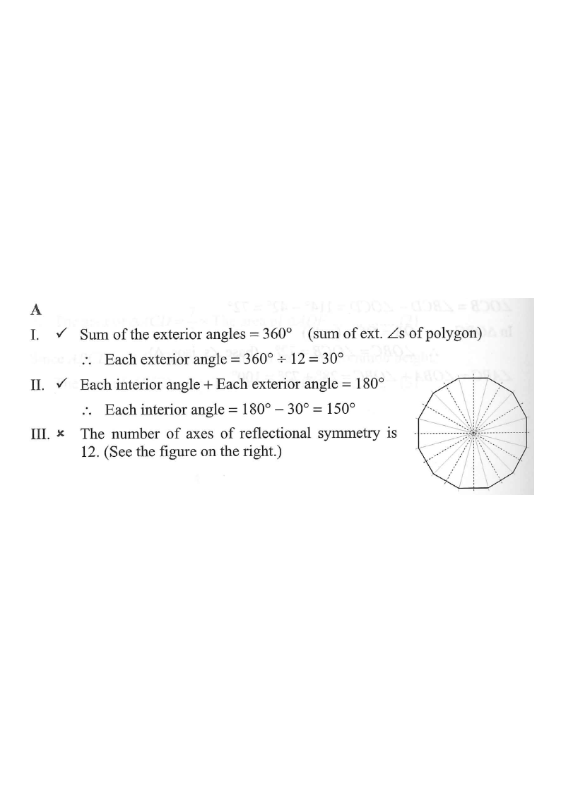

[2012 MC #22]
Which of the following statements about a regular 12-sided polygon are true?
I. Each exterior angle is \(30^\circ\).
II. Each interior angle is \(150^\circ\).
III. The number of axes of reflectional symmetry is 6. A. I and II only B. I and III only
C. II and III only D. I, II and III

Figure (original exam diagram)
STEP 1 · Exterior angle (Statement I)
The exterior angles of any convex polygon add up to \(360^\circ\).
For a regular 12-gon, all exterior angles are equal:
\[ \text{each exterior angle}=\frac{360^\circ}{12}=30^\circ \]
Statement I is TRUE ✓
Highlighted in red on the diagram — 12 identical turns of \(30^\circ\).
STEP 2 · Interior angle (Statement II)
At every vertex the interior and exterior angles form a straight line:
\[ \text{interior}+\text{exterior}=180^\circ \]
\[ \text{interior}=180^\circ-30^\circ=150^\circ \]
Statement II is TRUE ✓
Shown in amber at one vertex on the diagram.
STEP 3 · Axes of reflectional symmetry (Statement III)
A regular \(n\)-gon has exactly \(n\) axes of reflectional symmetry.
For \(n=12\) there are 12 such axes — 6 through opposite vertices and
6 through midpoints of opposite sides:
\[ \text{number of axes}=12 \neq 6 \]
Statement III is FALSE ✗
The dashed lines on the diagram show all 12 axes — count them!
STEP 4 · Conclusion
Only statements I and II are true.
Therefore the answer is option A.